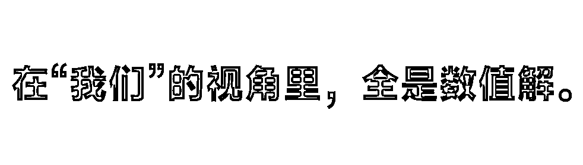
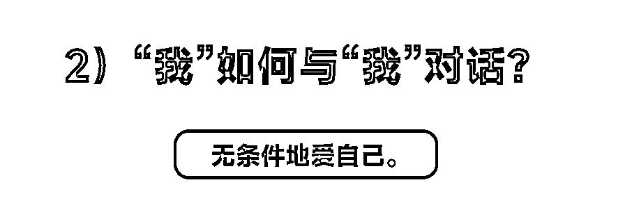

来源：https://cakdtk71pix.feishu.cn/docx/ImptdtPF1o6jeSxlDPrck9kfnch
嘉宾：条形马，连续创业者、写作者。
大家好，我是条形马，一个从2016年开始创业的连续创业者。今天我想和大家聊聊创业如何从素质增长到有机增长。我做过很多项目，一直在思考这些项目中有没有共性的东西可以分享。
首先，我想从商业模式的角度来聊聊。我们来换一个角度去看商业模式。因为大家一开始，说我们去搞钱也好，或者是做副业也好，或者是去参加航海、或者是做创业也好，然后慢慢的才掌握到一些怎么样去赚到第一块钱的一些逻辑，但整个逻辑当中大家会从无到有的内化了一些比较普遍的方法跟方式。
很多人一开始创业，都是从赚到第一块钱的逻辑开始的，但其实商业模式的核心在于如何让交易发生。也就是说如果你做了很多的动作，你有流量，你有粉丝，或者是你有影响力，或者是你入行了，或者是你踩中了蓝海。但是你所做的一切都没办法让交易发生，那很显然你的这个商业模式是不成立的。
交易的双方，一方交钱，一方交付，大部分交付就是产品或服务。大部分创业者，一开始做自由职业的时候，都会跳到我要拿一个好东西让大家来买、做个好东西让大家下单，这个时候就特别痴迷于产品的打磨上，磨着磨着就会发现自己掉进了一个旋涡里面。
但当大家开始读了一些精华帖，大家开始参加了一些航海实战以后，大家会发现说，我怎么从这样的一个过程里面走出来了？然后大家会发现说三步走、三个硬技能、三个方向其实蛮不一样的，硬技能都还是蛮重要的。
第一个是你会做流量吗？
第二个是你会做转化吗？
第三个是你会做复购吗？
做流量的方法跟做转化的方法，还有做复购的方法完全是很不一样的方法，而且这些方法跟你做产品跟服务的方法又还挺不一样的，所以我们来说这个做创业还是蛮需要一些比较复合的能力，就是说如果你认为自己是一个行业专家或者是某一方面的高手，那你可能不太能够比较好地把这个商业的项目做成。
当大家会说你从哪搞流量？你会做转化吗？你的这个落地页的好不好？你的 ROI 是多少？你的效果怎么样？你有没有复购？这样的问题已经会变成一个常态化的问题了，但是这些常态化的问题又会带来一个新的比较有意思的地方，我会觉得又有三件东西值得聊。
这三件东西没有什么很高深的部分，我觉得都是比较朴实的，但是又需要你用商业模式来回答。这些东西叫做：
能不能被用户大量看见、
能不能和用户持续达成交易、
能不能被用户长期选择。
这三个问题跟刚刚的三个问题有没有什么关系呢？他们之间的关系像是在都用不同的视角来看待同一个东西，这个视角有具体是什么方面的不同，那大概是这样的，我们会发现做流量、做转化和做复购，这是我们的视角。或者是说如果你今天是一个自由职业者，或者是你是一个个体的话，那它就是你的视角。在你的视角里面，你知道我要做流量，我要做转化，我要做复购。
那我今天换一个方向来讲说，如果是从用户侧的视角来看，我们是希望被用户大量看见，希望跟用户持续地达成交易，以及希望被用户来做长期的选择，那这种思考方式会带来一些难新的东西，这些难新的东西是在你来去思考右边的东西的时候很难思考到的，那我给大家来去是举一些更具体的例子，当然今天我想聊重点可能会在3，就是做复购的这一行，以及被长期选择的这一行。
我觉得我之前对 3 理解还不是很深。那对1和 2 我觉得倒还是蛮有手感的，所以我可能会把 3 的理解今天作为一个重点，但是还是来先看看1和 2 吧，就是在我们的这样的一个视角里面，我们会发现我们很容易发现做商业和赚钱的一些数值解。

什么叫数值解呢？就是说做流量这些都是很好用数值来刻画的。
你有多少粉丝？
你昨天新增了多少粉丝？
你上个月新增了多少粉丝？
你发出来一个东西有多大的曝光量？
那做转化也是这样的，你今天成交了多少单？昨天成交了多少单？每个月的 GMV 是多少？每个月的总订单是多少？这些都很容易有数值解，我们一旦拉出来一个表格以后，我们就很喜欢在表格里面从左到右画起来，画一条线，看看它的延长线在哪里？如果它变成了一个很弧线，我们就会很焦虑说，它是不是在往下走？
但如果我们能够跳出从我们出发的这个视角，我觉得就还能够看出来一些新的东西，因为如果我们能够跳出来我们对问题的所有的这个数值解的话，我们可能也会跳出来所有的KPI ，然后我们就会慢慢地变得更创新、更自在，或者是更有想象力一点。
所以我说，在数值解面前通常会有KPI，但是在用户视角下我们开始有理解。
这个理解是怎么样体现的呢？我们来举个例子。首先我们来看是这个被大量看见和做流量的区别，就是如果你今天放下了我要去做流量的思维，然后去想另外一个问题：
我的产品和我的服务如何能够更好地、更多地和更大量地被我想要的用户看见？
你会发现你的思路跟方法会打开了很多，甚至有的地方它并没有一个所谓的流量的刻画，就比方说你在某个地方发帖它甚至没有浏览量和播放量这些概念。
同时，我们会意识到我想要被看见是有成本的，那这个成本是如何体现呢？今天如果你们是在做自己的自媒体账号，或者是这个短视频、抖音、小红书账号，你会发现大部分人的会有两种流派。
第一种流派就是做自然流的，第二种是做付费流的，为什么做自然流的也能把这个事情做成？做付费流的也能把这个事情做成，就是说在不同的商业模式里面，你这个被看见的成本其实从不同的地方出的。
当你说你自己做免费流的时候，你在用你的劳动，和用你的内容创作能力来去承担这个被看见的成本，你为平台贡献了平台需要的内容，于是平台用你的内容让用户看见你，从而让你带来机会。
我如果被用户看见了以后接下来意味着什么呢？意味着用户其实同时看见了很多东西，用户有一个他的购买角色需要说需要去实现，那你被用户看见了，你就有机会成为用户的选项。但如果今天没有被看见，你就没有办法形成变成用户的购买选项，那你如果没有办法变成选项，几乎就没有可能被用户选择。
从看见到成交的中间的一切其实都是有成本的，那这其中有一项很大的成本是很难忽略的，就是说我们跟用户如果达成一次交易，用户是有决策成本的。
用户第一次来决定到底是找别人还是找你买的时候，可能做一个小时，甚至是两个小时的功课，但是用户在你这里买完之后觉得还蛮好的，我还要再来一次。这个时候用户的决策成本可能就突然变得就只有 5 秒钟、 1 秒钟，甚至毫不犹豫了。
那第一次的交易一旦发生，后面的交易就会轻松很多，我把这个理解为，第一次的交易一旦建立以后，真正被构建起来的是是你跟用户之间的信任。所以一次不满意的交易会创造出来一个难以翻阅的交易成本，这个交易成本被阻碍之后几乎所有的交易。
长期的视角下，复购才是真正意义上的用户和你建立的商业链接。
一个好的商业模式，应该让用户方便地找到你，方便地再下单。如果大部分订单都是复购，那意味着你的商业模式更稳定，因为你不需要一直支付高额的广告费来获取新用户。
我还想强调的是，商业模式的寿命取决于几个关键因素。
首先，你的业务是否满足一个客观的长期需求，而不是用户的尝鲜预算。
其次，交易的发生权是否在你手里。如果平台政策一变，你的业务就受到影响，那就不够稳定。
最后，你能熬多久？在收入下滑的时候，你还能坚持多久？如果一个业务的学习成本超过六个月，那么竞争对手就不容易进来。
创业不仅仅是业务上的挑战，还有心力上的挑战。这件事情它虽然不是业务上的困难，但它的困难是真实的。我想分享一下如何应对创业过程中的心理压力。
第一个点是怎么样去清淤泥和减负重。但这一块我没有什么方法，也没有什么理论，只是想说我有一点经验，这些经验都是我自己从自己真实的经历当中去萃取出来的。
睡前是大家一天的意志力和精力最弱的时候，这个时候我们就会不停地去做很轻松就能做到的事，但是会让你睡眠很差，这就是一个惯性。或者是说当你在周末的时候，你如果没有出门，你在干嘛？
大家可以去盘一下自己的这个时间的账，尤其是自己手机屏幕时间的账，你现在用的这个智能手机应该都有这样的功能，或者是电脑去盘一下自己的屏幕时间的账，以周为单位来看看一下哪些活动是时间占用非常非常大，但是你却从中没有获得一些恢复和一些滋养的。
如果有这样的事情，你可以把自己的这个行为当成一个惯性去看一看，告诉自己下次在做这件事情的时候，我能不能够做到说我告诉自己我要停下来了。如果能够跳出这个惯性的话，你会发现你会拥有大量的时间，而且你也能够得到蛮好的休息。
不要在头脑当中对自己霸凌、对自己网暴。如果你意识到你有的时候我们会把思考、感受、想法和评价混淆，有的时候我们会认为自己在思考业务，或者是在思考自己的人生，或者是在思考自己的规划，实际上慢慢就变成你在做的事情就是在评价自己。
很典型的一个现象是，如果你在拿自己跟你最近见到的人做比较，你就是在评价自己，这个评价自己是发生得无声无息的，但是这种评价往往不太好，因为在这种评价里面，你总会放大自己的不足，总会放大别人的优点。
同时每一次你评价完了自己之后，你会发现自己的状态都不太好，会给自己减分。所以我们应该有意识地多夸一夸自己，不夸自己的时候更好的办法就是停下来，从今以后我再也不评价自己的行为。这个事情比较难，但我们可以把它当成一个一生的课题去修炼。
因为创业者总是要给自己打气，所以创业者很少会承认自己的缺点，很少会承认自己的不足，很少会承认自己做不到。但我在这个很困难的过程里面，我意识到如果我愿意承认哪些事情我做不到，那么这一关就会像一口很浑浊很浑浊的空气一样被我吐出来了，它再也不会成为一块压在我们胸口的大石头了。
你可以承认你是一个需要睡眠的人吗？大家都很羡慕一旦创业就不太需要睡眠的人。
你愿意承认你创业就不再需要睡眠了吗？如果这些你都愿意承认的话，你自然而然能够找到一种方式，这种方式是能够比较好地去平衡和兼顾它们的。
你会发现当你承认了一些事情后，你的一些商业选择会变得更清晰。那承认还是一个心理的感受，那还有一种更好的感受，就是你能够说出来。如果对自己很困难的感受，或者是跟人相关的，或者是跟业务判断相关的，或者是跟亏钱相关的。
心理学家有一个实验，就是无论你找谁说，只要你能说出口，这个压力就会自动的打个折扣，变成原来的 50%。
我们自己不仅在评价自己，往往在头脑当中会不停地跟自己讲故事，在故事里面我们会形容自己是谁，自己是一个怎样的人，自己要干嘛？自己做什么事情？为什么做成了？为什么没做成？在这些节点上我觉得很关键的一个点是我们可以允许自己去转变思路，允许自己变成一个新的人，允许自己有新的可能性正来到自己的身上。
意识到当下并不是过去一刻的成本，也不是当下的目的，你就活在了当下。如果你今天花了时间在现场，但是又不接受自己在现场这个事情，这就是浪费时间，就是没有活在当下。
我现在全然地接受自己，洗碗的时候就能在洗碗，做饭的时候就能在做饭，洗衣服的时候就能在洗衣服，散步的时候就是在散步，我会觉得好舒服，这种舒服的感觉给我带来了大量的恢复，这种恢复是我以为我以前要出去旅游，要好好睡一觉，要玩一玩什么游戏，看看什么电影才能获得的，但现在发现完全不需要。
过去与未来全在你的头脑中，只有当下不在，但是你在当下当中不停地想过去，不停地想未来，你就会失去当下。失去当下，也会失去当下能够给你的力量，那么怎么办呢？答案是从头脑当中走出来，能够去哪里呢？来当下。

无条件地爱自己。
所以你会发现，说我如何跟我自己对话，我如何让我自己变得更好，是我更会时间管理吗？完全不是的。如果你能够接受，不再评价自己，如果你能够接受自己必须要过的每一分每一秒，你已经做了决定了，那就让这个决定完完全全地接纳它。这些其实都是你在无条件的爱自己。
我不知道有多少人爱自己是有条件的，什么叫爱自己是有条件呢？
你如果现在是一个自由职业者，你可以说我赚到第一块钱，我才爱自己。如果你已经赚到第一块钱，你会想我要赚到第一个 100 万，我才可以爱自己，我才可以让自己去玩，我才可以在周末的时候没有搞业务心安理得，不然的话，我在周末如果没有思考业务，如果没有安排自己学习，如果没有去见任何我认为值得学习的人，我会觉得自己不好，我会觉得自己不够进步，我会觉得自己在蹉跎时光，这些都是爱自己的条件。如果你爱自己带条件，相信我你是等于不爱自己。
我想说我们如果做了蛮多有意义的事情后，我们自己的信任就会变得更踏实。这种更踏实的感觉帮我们在很多很难很难的时刻，更能让我们往下走得更坚定。因为一旦花了时间，我们就在用心地对待出现在我们身边的每一个人、每一个事，所以就会有很多之前完全影响不到、完全不在计划之内的事情飞起来。所以当意义拷问时，我们应该如何自处呢。在这里给大家分享一些我的信念。
所以如果你相信事实无法预测，那么你也应该相信人生的意义是没有办法被设计的，你不能用一个你设计好的静态的脚本去演一个不停动荡的舞台，你总是要适应变化。
人生没有办法去设计，以及没有关于生活的普遍真理。
所以不要把自己任何的念头、任何的想法、任何的方法、任何的理念当成自己的真理。如果你当成自己的真理，这属于一种一元论，大家不要变成一个一元论的人。变成一个一元论的人，最后就会变成一个很虚无的人，最后会虚无到没有办法生活下去。
不要再去设计，也不要再去规划了，不要再去计划太多太详细的东西，看到某件计划外的事情时，可以让自己去体验一下，看看是不是能够持续的让计划之外的可能性发生。
我们不要去扮演那个假装很厉害的人，扮演那个连牌还没有接到手里面就能知道它是什么牌的人。我们就是把一张牌踏踏实实地接到自己手里，踏踏实实地接纳它，接纳这个是在自己的计划之外的，但是也愿意把自己的时间，把自己的注意力交给它。我觉得只有这样才能把这张牌的牌面到底是什么给打开，打开之后你才会知道自己需不需要它，然后你才会有可能凑出来一把好牌。
面对未来多面复杂的、乱七八糟的的世界，你的策略是什么？我就觉得一直接牌一直出牌就一定能够生活的好，只要你能够知道自己该接什么牌，该出什么牌就好了，剩下的交给发牌的。那怎么样是真的接牌？怎么样是真的出牌呢？我觉得有一个简单的原则来去看，就是你能不能从你的脑海当中走出来，在真实的世界当中做一个事情。
如果你脑海里有一个构思，想了6个月、9个月甚至12个月，还是停留在脑海当中，那这个时候你就不要再为自己开脱了，从惯性里走出来，马上去实干。
因为如果一件事情你做之前就能够看懂，你相当于能够拥有未来。
前面也许会觉得说创业为什么会聊到心力聊这么久，以及为什么会展开，就是尽量从心里面说一些大概的良心，就是因为我觉得创业的路上其实是需要一个非常笃定的我的，因为只有有这样的一个笃定的我，只有有这样的一个坚定的自我，它才是最大的战略定力。
你相信你自己，这个就是战略定力。例如，我告诉自己，我在这件事情上我愿意花 6 个月，我就是能够坦坦荡荡的把这 6 个月不带来一点折扣的花出去。这就是一个自我的建立，你尊重自己的每一次决策，这就是战略定力。
当然这个过程当中会有各种各样市场的声音、朋友的声音来帮助你想好自己的退路，这个时候你不要去听，因为只有真正的自我坚定，才能够有真正的主动。我意识到我的诉求，我意识到我的想法，我决定尊重它，我决定真正在现实世界当中去干点啥，这个就是主动。
如果别人有节奏了来打你怎么办？最好的解决方法是什么？最好的方法就是：你打你的，我打我的。不要掉入别的BGM里面去。你只有在自己的 BGM 里面才能打得过别人，这个就是主动的意思，只有主动你才能够坚持自己的不同意见，你才能够坚持自己的判断。
自我的坚定也体现在低谷上，如果没有一个坚定的自我，你会发现每一次的低谷都是你的死亡观。低谷只要一来你就会死。
如果你有自我的坚定，你才会真真正正的有耐心。耐心并不是一个凭空来的东西，耐心来自于相信你自己，来自于在困难当中能够自己去寻找力量，也能够给予自己的，最终一个有自我的人会变成一个什么样的人？他会变成一个生机勃勃的人，一个生机勃勃的人是幸福的。
最后，用2024年读到最喜欢这首诗送给大家，希望大家都能够找到自己，爱自己，成为自己最坚定的战略定力。